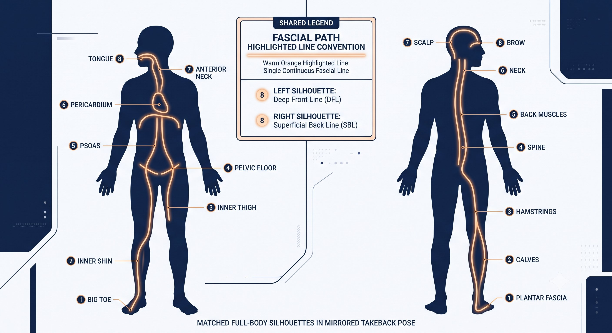
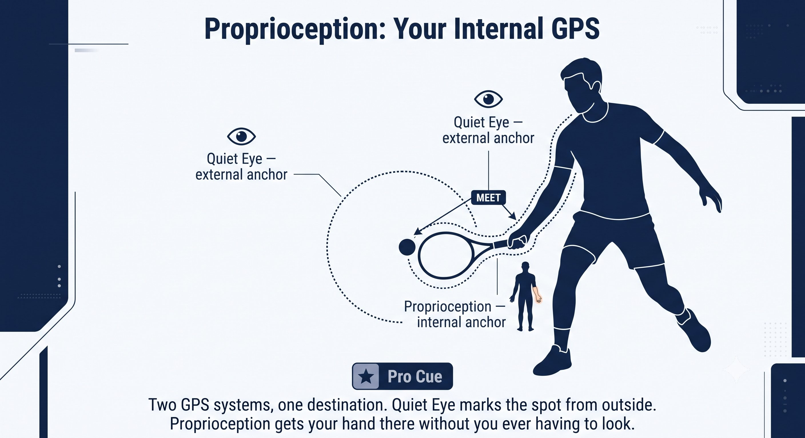
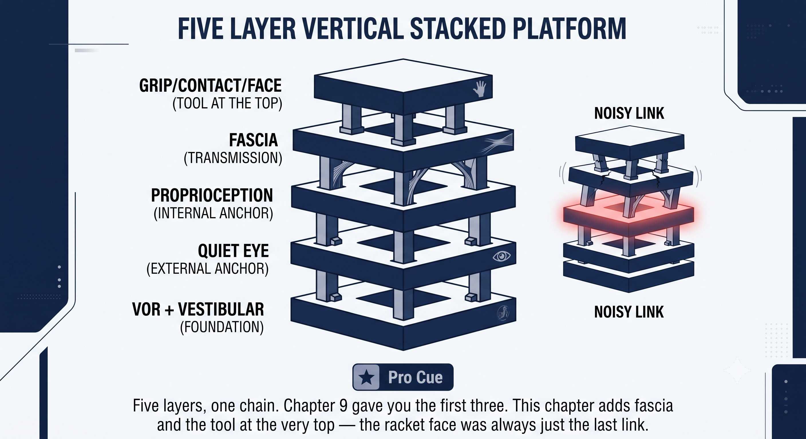

Chapter 10: Fascia and Proprioception
(English version of Chapter 10 in the United Tennis Handbook)
CHAPTER 10

Figure 1
FASCIA & PROPRIOCEPTION
The Biological Hardware (F, P)
Muscles don't move you. Fascia and proprioception do — muscles are just the motors stitched inside the fascial wetsuit.
Fascia is the continuous collagen web that wraps every muscle and connects muscle to muscle. It has two properties muscles don't have: elastic storage and force transmission across joints.
— Henry Pham
Fascia: The Transmission, Not the Engine
Fascia has two properties that muscle tissue simply doesn't:
– Elastic storage: it behaves like a rubber band. Stretch it slowly during the takeback and it snaps back for free — no extra energy cost.
– Force transmission across joints: your back foot can tension your opposite shoulder through fascia alone. Muscles can't do that; they only pull on the joint they physically cross.
The Principle
Takeback length was never about how far the racket travels. It's about how much fascial stretch you create without breaking the continuity of that tension.
Two Fascial Lines That Matter for Tennis
A. The Spiral Line — Your Forehand Push
Path: the inside arch of your back foot, up the inside of the thigh, across the belly, into the opposite obliques, up through the chest, across the shoulder, down the forearm, into the palm.
– This is your push line. Done correctly, the back-foot arch loads, the hip coils, the obliques stretch, the chest stretches, and the palm delivers the push.
– You should feel one continuous stretch line from the back foot to the chest during the takeback — not just an arm sitting behind you.
– If your arm tightens, the line breaks at the shoulder. Chest power never reaches the hand, so you end up muscling the shot with the forearm alone — and that's exactly where elbow pain comes from.
B. The Functional Back Line Plus Arm Line — Your Saber Backhand
Path: the back foot, up the hamstring, through the glutes, across the lower back, into the opposite lat, over the shoulder, down the tricep, along the forearm's outer edge, into the pinky side of the hand.
– This is your saber line. Drawing the saber loads the back leg and the lat with the elbow held high, and you should feel a stretch running from hip to lat to elbow.
– The drop itself comes from gravity plus fascial recoil, not a tricep push. The edge leads because the fascial line is pulling from the lat, not being pushed from the hand.
– If you tighten your hand early, you break the line at the wrist and lose the elastic snap entirely.
Figure 10.2: Same player, same takeback phase. Left: continuous stretch — the whole body is one elastic line from foot to palm. Right: arm tightens at the shoulder — the line breaks, chest power leaks out before it reaches the racket. Feel the difference, and you will never hitch again.

Figure 2
Figure 10.1: Two fascial lines, two strokes. Spiral Line (push forehand): back foot arch → inner thigh → belly → obliques → chest → shoulder → forearm → palm. Back Line + Arm Line (saber backhand): back foot → hamstring → glutes → lower back → lat → shoulder → tricep → forearm outer edge → pinky hand. One continuous line, foot to hand. If you can trace it on your own body during the takeback, you're using fascia. If you can't, you're using arm.

Figure 3
The Principle
Takeback length was never about how far the racket travels. It's about how much fascial stretch you create without breaking the continuity of that tension.
Proprioception: Your Internal GPS
Proprioception is your body's sense of where it is without looking — built from muscle spindles (stretch), Golgi tendon organs (load), joint receptors, and fascial mechanoreceptors.
Quiet Eye gives you an external target. Proprioception gives you an internal one: where your hand is relative to your body, and where the contact point sits relative to your chest.
Poor proprioception forces you to look at the racket to know where it is — which kills Quiet Eye outright. Good proprioception lets you stare at the empty contact zone and simply feel the racket arrive.
Figure 10.3: Two anchors, one contact point. Quiet Eye (external) — eyes parked on the empty space where contact will happen. Proprioception (internal) — body-map feeling the racket hand's position relative to the torso. Both meet at the same spot. You don't look at the racket; you feel it arrive at the parked eyes.

Figure 4
Two Receptors That Control Your Tension Pattern
The loose-tight-loose tension cycle from earlier chapters is literally a negotiation between these two receptors:
Figure 10.4: Two silent referees. Muscle spindles (coiled spring) — detect fast stretch, trigger protective tightening. Golgi tendon organs (tension gauge) — detect high load, inhibit muscle to protect the tendon. The four-beat cycle: Takeback 3/10 (spindles tolerate slow stretch) → Swing rising (spindles under control) → Contact 6/10 for ~30ms (load spikes but brief, Golgi doesn't inhibit) → Follow-through 3/10 (both reset). Respect both and the cycle runs itself.

Figure 5
The four-beat cycle plays out like this:
– Loose takeback at 3/10: spindles tolerate the slow stretch, the Golgi organs stay quiet, and the fascial line stretches continuously.
– Forward swing: spindle stretch increases, but under control, so no protective tightening kicks in.
– Contact: a firm 6/10 for roughly 30 milliseconds — load spikes but stays brief enough that the Golgi organs never inhibit it.
– Follow-through: an instant drop back to 3/10, and both receptor systems reset for the next stroke.
How VOR, Fascia, and Proprioception Connect — the Full Stack
Put together, this is the complete human system behind every stroke:
Figure 10.5: Five layers, one chain. VOR + Vestibular (foundation) → Quiet Eye (external anchor) → Proprioception (internal anchor) → Fascia (transmission) → Grip/Contact/Face (the tool at the top). This extends Chapter 9's three-layer V-Q-CORE platform into the complete Q-V-F-P-CORE stack. If any link is noisy, the layers above wobble — and the brain compensates with co-contraction, making you tight, slow, and late.
If any single link in that chain gets noisy, the brain compensates by increasing muscle co-contraction — and you feel tight, slow, and late.
How to Train Fascia and Proprioception
Normal gym lifting doesn't train fascia. You train it with stretch-load-and-recoil work, and with slow, deliberate awareness drills.
For Fascial Elasticity:
– No pause at the end of the takeback: the stretch has to flow directly into the forward swing. Pause, and elastic energy dissipates as heat within about a second — which is exactly why a continuous loop takeback generates effortless power and a hitchy one doesn't.
– Counter-movement load: before the push forehand, let the chest open slightly before the arm comes forward. Before the saber backhand, let the hips turn slightly forward while the racket is still going back. This pre-stretch loads the spiral and back lines.
– Long-axis stretch between points: don't just shake the arm out. Do a full-chain stretch — press the back foot into the ground, reach the hand away — and feel one long line from foot to hand.
For Proprioception:
– Eyes-closed shadow swings: run push and saber shadow swings with your eyes closed. Can you feel where the face is pointing without seeing it? If not, your proprioception has been leaning on vision to do the job.
– Barefoot balance plus mini swings: on court, barefoot, run tiny swings feeling the connection from the inside arch to the palm. Shoes dampen the foot proprioception that starts the spiral line.
– Slow-motion contact hold: take a full 10 seconds to move from takeback to a frozen contact position, eyes parked. Feel every inch of fascial stretch build. This trains the spindles to tolerate stretch without firing.
The Rule
Takeback was never about how far the racket goes back. It's about how much fascial stretch you create without breaking the continuity of that tension.
The Full Stack: Q-V-F-P-CORE
VOR stays on to arrive balanced. A still head makes VOR go quiet. Quiet Eye parks on the external spot. Proprioception feels the internal position relative to that spot. Fascia, loaded during the takeback, stores the energy. The tension pattern allows a clean recoil. Grip and contact deliver the face the court position and ball height require. And the push or saber feeling transmits through the fascial line you've built.
When it's working, you don't feel muscular effort. You feel this instead:
– Forehand: a stretch from foot to palm, then a release, with the palm pushing through the ball while the eyes stay parked.
– Backhand: a stretch from hip to lat to elbow, then the edge slicing down through the ball while the head stays side-on.
Effortless power isn't less effort. It's effort redirected into the right tissue — fascia and elastic recoil — instead of bicep and forearm.
Where This Leads
This chapter establishes F and P — fascia and proprioception — as the biological hardware in Q-V-ROOT-8-45-Impulse. Chapter 11 covers T, tensegrity, as the structural principle that holds this hardware together. Chapter 12 covers the stretch-shortening cycle as the engine it powers. Chapters 19 through 21 return to fascia and proprioception with full body-scan checklists built specifically for the push forehand and the saber backhand.